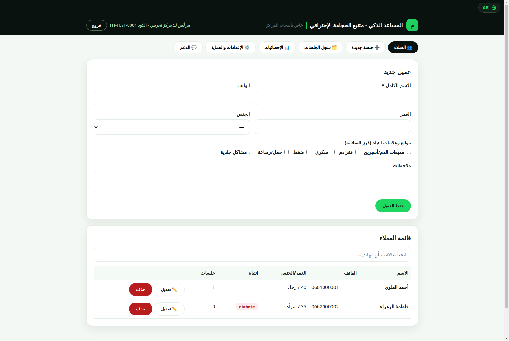
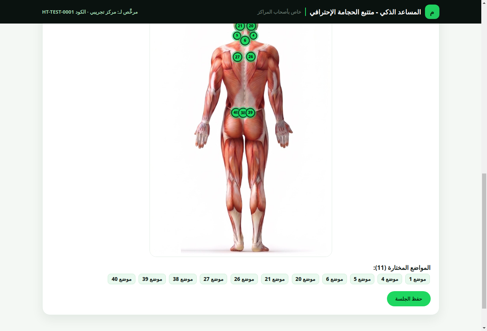
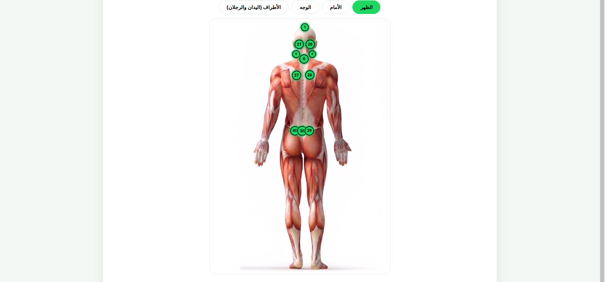
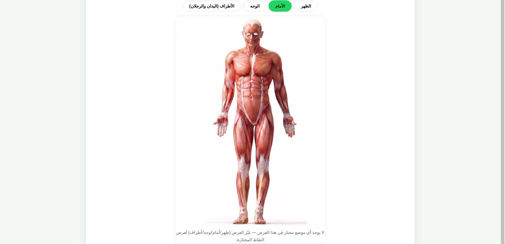
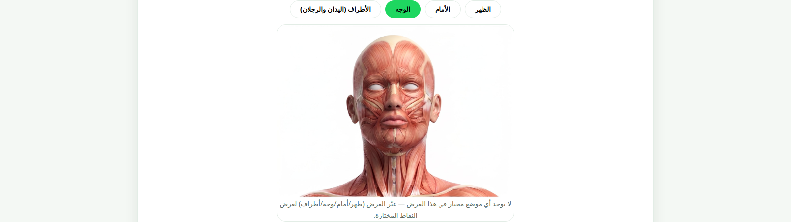
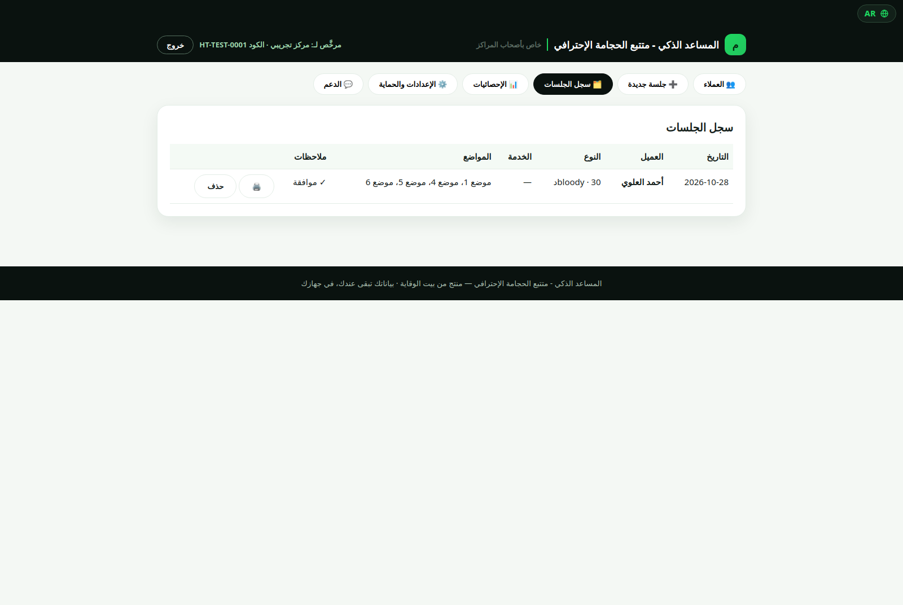
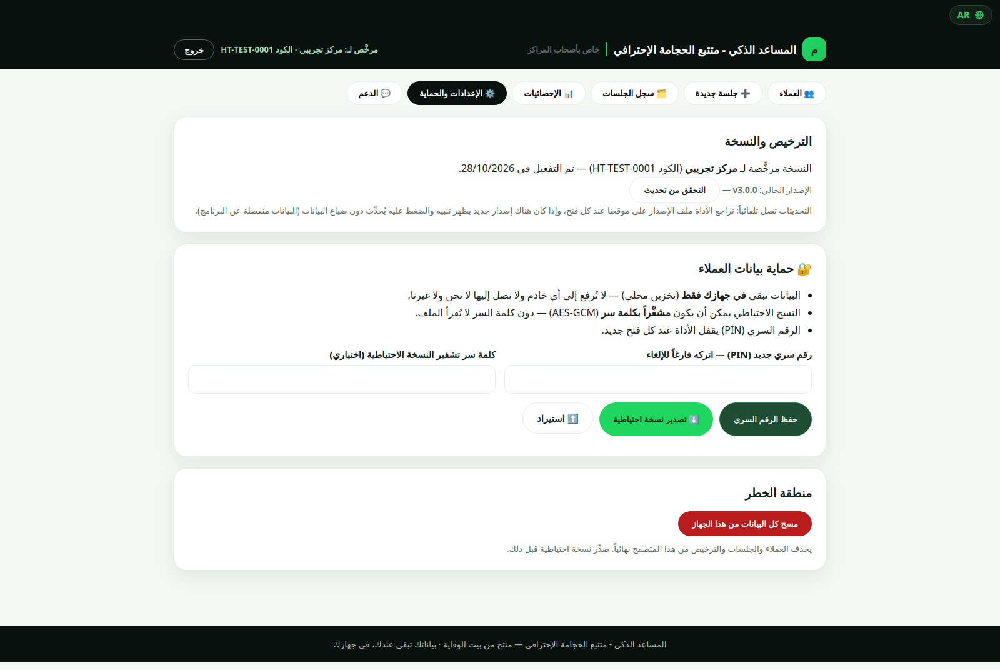

L'Assistant Intelligent
Un outil professionnel pour les centres de hijama : cartes de points interactives, assistant intelligent qui suggère les points selon le cas, et documentation complète des séances — le tout en local sur votre appareil, avec des mises à jour automatiques depuis l'application.

Version 3.0.1 pour Windows, d'environ 115 Mo. Après l'installation, vous trouverez un raccourci sur le bureau et dans le menu Démarrer, et la licence officielle est accordée au nom et avec le code après la demande et le paiement.
Que fait l'Assistant Intelligent ?
Six fonctionnalités pratiques, conçues au sein d'un vrai centre.
🗺️ Carte de points interactive
154 points sur les cartes du dos, de l'avant, du visage et des membres — sélectionnez directement sur la carte en touchant.
🤖 L'Assistant Intelligent
Choisissez jusqu'à 3 cas en une fois, et il suggère les points adaptés — 72 cas prêts, et ajoutez n'importe quel emplacement manuellement par son numéro.
☪️ Points de la Sunna et préventifs
Ensembles prêts en un clic : points de la Sunna, ou préventifs, ou les deux ensemble.
🗂️ Documentation complète
Dossiers clients avec recherche rapide, registre des séances, fiche de séance à imprimer, et consentement éclairé avant chaque séance.
🔒 Protection renforcée
Verrouillage par code PIN, sauvegardes chiffrées (AES-GCM) et données 100 % locales.
🔄 Mises à jour automatiques
Lorsqu'une nouvelle version paraît, l'application vous alerte et se met à jour en un clic — et la licence et les données vous suivent automatiquement.
Comment ça marche ?
Téléchargez la version v3.0.1 — via le bouton de téléchargement direct sur cette page (Windows, installateur officiel à installer sur votre ordinateur).
Activez avec le nom et le code — demandez la licence via WhatsApp, payez par virement bancaire, et recevez le code propre au nom de votre centre.
Enregistrez les clients et les séances — depuis la carte interactive, les points de la Sunna et préventifs, ou l'Assistant Intelligent.
Documentez et mettez à jour — chaque séance est enregistrée dans le registre, et les mises à jour vous parviennent dans l'application en un clic.
Les normes selon lesquelles nous travaillons
Avant d'être un outil, c'est un engagement professionnel.
🛡️ La sécurité d'abord
Tri des contre-indications et consentement éclairé avant chaque séance, en conformité avec les normes de l'OMS en matière de sécurité et de stérilisation.
🔒 Confidentialité absolue
Vos données ne quittent jamais votre appareil — stockage local uniquement, sans serveurs ni suivi.
📖 Contenu professionnel rigoureux
Cartes et points professionnels, loin des superstitions et des allégations non prouvées.
🗂️ Documentation et transparence
Chaque séance est documentée : le client, le type, les points, les remarques et le consentement — une référence professionnelle complète.
Découvrez l'application de l'intérieur — en vidéo
Visite filmée de l'Assistant Intelligent — le suivi professionnel de la hijama : les clients, les séances, les cartes de points et l'Assistant Intelligent. Appuyez sur lecture et regardez directement ici, sans quitter la page.
Visite de l'application — page par page
De vraies captures depuis l'application, page par page.











Autres logiciels pour les centres — bientôt ⏳
Nous préparons de nouveaux outils pour les propriétaires de centres, et nous les annoncerons ici dès qu'ils seront prêts.
Questions fréquentes
Comment activer l'application ?
Téléchargez la version depuis cette page, demandez la licence via WhatsApp, payez par virement bancaire, et recevez le code propre au nom de votre centre — saisissez-le sur l'écran d'activation.
L'outil fonctionne-t-il sans Internet ?
Oui, l'usage quotidien est entièrement local sur votre appareil : les clients, les séances et les sauvegardes. Internet n'est requis que pour le premier téléchargement et pour la vérification des mises à jour.
Puis-je l'utiliser sur plus d'un appareil ?
Une licence pour un seul appareil, au nom.
Comment me parviennent les mises à jour ?
L'application vérifie automatiquement : lorsqu'une nouvelle version paraît, une alerte s'affiche, et un seul clic la télécharge et l'installe — et la licence et les données vous suivent automatiquement.
Comment payer ?
Par virement bancaire — demandez via WhatsApp (depuis CIH, l'activation est immédiate, et depuis une autre banque, après la réception du virement).
Quelles sont les conditions de fonctionnement ?
Version Windows (ordinateur). Installateur officiel : installez-le sur votre ordinateur, vous trouverez un raccourci sur le bureau et dans le menu Démarrer, et la désinstallation se fait depuis le Panneau de configuration.